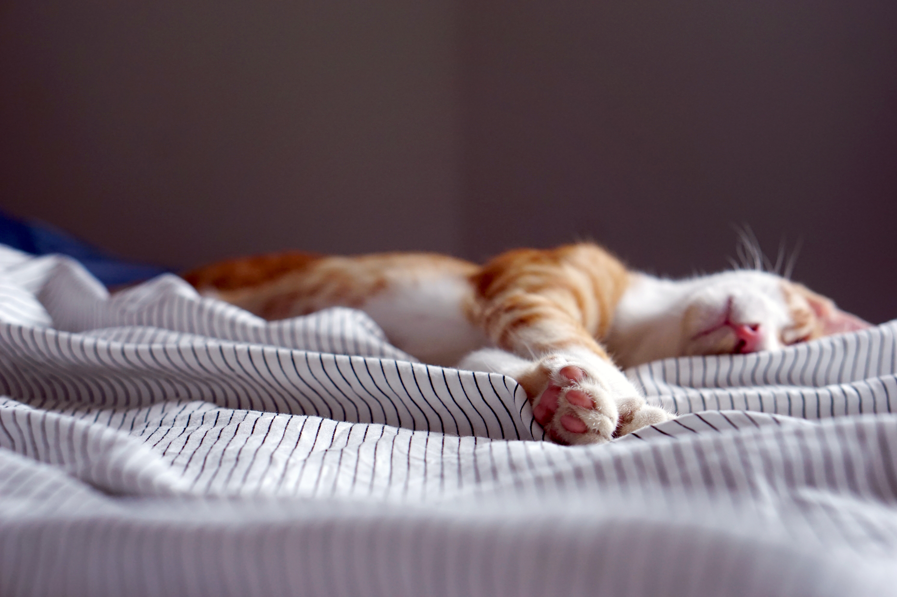

- Herr Spaghettibein
- Übernachtungsparty
- Ein kalter Wintertag
- Schorsch hat sich erkältet
- Die Ballonfahrt
Peppa Wutz - Schorsch hat sich erkältet(George Catches a Cold!)

YouTube에서 동영상 보기
Ich bin Peppa Wutz.
Das ist mein kleiner Bruder Schorsch.
Das ist Mama Wutz, und das ist Papa Wutz.
Peppa Wutz.
Schorsch hat sich erkältet
Heute regnet es ein bisschen.
@ Peppa, Schorsch, zieht eure Regensachen an.
Wenn es regnet, müssen Peppa und Schorsch ihre Regensachen anziehen.
@ Bäh!
Schorsch mag seinen Regenhut nicht tragen.
@ Schorsch, du musst deinen Hut anlassen!
@ Warum?
@ Weil du trocken bleiben sollst.
@ Warum?
@ Weil du dich erkälten könntest.
@ Warum?
@ Schorsch, willst du draußen spielen oder nicht?"... "Dann lass deinen Hut an.
@ Komm mit Schorsch!"
Peppa und Schorsch wollen in Matschepfützen herumspringen.
@ Bäh!
Schorsch möchte seinen Regenhut nicht tragen.
@ Peppa, Schorsch!
@ Kommt ins Haus! Es regnet jetzt zu stark um draußen zu spielen.
@ Oh Schorsch, wo ist dein Regenhut?
@ Hatschi!
Schorsch hat sich erkältet.
@ Armer kleiner Schorsch, du hörst dich gar nicht gut an.
@ Keine Sorge, ich rufe Doktor Braunbär an.
@ Doktor Braunbär am Apparat... Aha, stecken sie Schorsch ins Bett ich komme gleich vorbei.
@ Danke Doktor Braunbär, wiederhören.
@ Muss Schorsch denn jetzt ins Krankenhaus und bekommt Medizin?
@ Nein, Schorsch muss einfach nur ins Bett."
@ Oohh, dann ist Schorsch ja gar nicht richtig wirklich krank!
@ Hatschi.
@ Iiehh! Das ist ekelhaft!
@ Armer Schorsch, ich bringe dich gleich ins Bett.
@ Schorsch, du musst jetzt eine Weile im Bett bleiben.
@ Nein!
Schorsch möchte aber nicht im Bett bleiben.
@ Schorsch, du musst im Bett bleiben bis es dir wieder besser geht.
@ Warum?
@ Weil du dich schön warm halten sollst.
@ Warum?
@ Weil Doktor Braunbär es gesagt hat.
@ Hallo, wo ist denn mein Patient? Mach weit auf und sag 'Aaahhh'.
Schorsch hat ein bisschen Angst.
@ Peppa, du bist schon groß und tapfer. Kannst du Schorsch zeigen wie das geht mit dem 'Aaahh'?
@ Natürlich. Aaahh.
@ Aaahh.
@ Schorsch hat sich erkältet
@ Bekommt Schorsch Medizin?
@ Nein, aber er kann heute Abend eine schöne warme Milch trinken, das hilft ihm einzuschlafen.
@ Danke schön Doktor Braunbär.
@ Gern geschehen. Wiedersehen!
Schorsch war den genzen Tag im Bett. Jetzt ist Peppas Schlafenszeit.
@ Schorsch, geht es dir besser?
Schorsch geht es nicht besser.
@ Schorsch, würdest du bitte nicht so laut niesen? Ach, das ist ja unmöglich!
@ Schorsch, hier hast du eine schöne warme Milch, um besser einzuschlafen.
Die warme Milch macht Schorsch sehr sehr schläfrig.
@ Gute Nacht meine kleinen Schweinchen.
@ Ah, es ist so friedlich und ruhig.
Es ist Morgen. Schorsch hat sehr gut geschlafen. Schorsch geht es besser.
@ Kommt alle nach draußen, es ist ein schöner sonniger Tag.
Schorsch trägt seinen Regenhut. Er möchte sich nicht nochmal erkälten.
@ Oh Schorsch, heute brauchst du deinen Regenhut nicht.
@ Warum?
@ Weil es sonnig und warm ist.
@ Warum?
@ Schorsch, kannst du mal aufhören 'warum' zu sagen?
@ Warum?
@ Schorsch geht es wirklich besser.
출처 : German / Peppa Wutz - Deutsch "Schorsch hat sich erkältet"